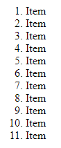
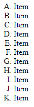
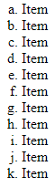
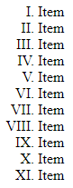
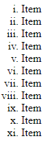

Use the following list to perform the steps of the following task.
Perform each of the following steps and take a screenshot each time. The screenshot should show how the list at the top of the browser is displayed after you have performed a particular step.
Save the screenshots in the subfolder ./screenshots.
Replace the <ul>-tag with a <ol>-tag.
What do you find?
That instead of just unordered bulletpoint now the list is ordered in bumbers

Add a type attribute to the <ol>tag and give the attribute the value A.
What change do you notice?
The list is ordered by upper case letters

Now replace the value A with the value a.
What change do you notice?
The list is ordered by lower case letters

Now replace the value a with the value I.
What change do you notice?
The list is ordered by upper case numbers

Now replace the value I with the value i.
What change do you notice?
The list is ordered by lower case numbers
What other attributes (besides the type attribute) are there for ordered lists? See the reference from W3Schools.
Create a short list in which you list the attributes and give a short description.